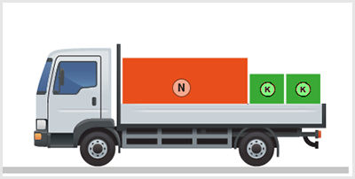
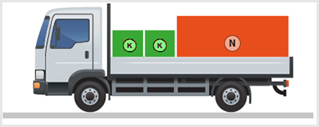
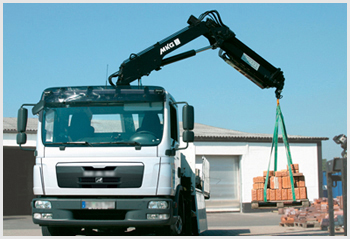
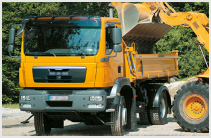

<!DOCTYPE html>
<html lang="hu">
<head>
    <meta charset="UTF-8" />
    <meta name="viewport" content="width=device-width, initial-scale=1.0" />
    <title>Rakománycsoportok rakodása – „C” kategória - Munkavédelem, tűzvédelem, szállítás</title>
    <meta property="og:site_name" content="KRESZ teszt &ndash; „C” kategória - Munkavédelem, tűzvédelem, szállítás" />
    <meta property="og:description" content="Rakománycsoportok rakodása kérdések és helyes válaszok („C” kategória - Munkavédelem, tűzvédelem, szállítás)" />
    <link rel="stylesheet" href="../test.css" />
</head>
<body>
    <div class="topic-header">
        <nav class="topic-breadcrumbs">
            <a href="index.html" class="crumb-link">&laquo; „C” kategória - Munkavédelem, tűzvédelem, szállítás témakörei</a>
            <span class="crumb-sep">/</span>
            <span class="crumb-current">Rakománycsoportok rakodása</span>
            <span class="crumb-sep">/</span>
            <a href="../../index.html" class="crumb-home">Interaktív teszt &raquo;</a>
        </nav>

        <div class="topic-title-section">
            <span class="topic-badge">Témakör 22 / 25</span>
            <h2>Rakománycsoportok rakodása <small class="topic-badge-info">(16 kérdés, vizsgán: 1 db., 1 pont)</small></h2>
        </div>

        <div class="topic-nav-bar">
            <a href="group-1668702097.html" class="nav-btn nav-prev-btn" title="Egységrakomány-képzés">&laquo; Előző témakör</a>
            <a href="index.html" class="nav-btn nav-hub-btn">Témakörök listája</a>
            <a href="group-1668702262.html" class="nav-btn nav-next-btn" title="Rakománycsoportok rögzítése">Következő témakör &raquo;</a>
        </div>
    </div>

    <div class="group" id="group-1668702189">
        <div class="questions">
            <div class="question" id="question-703085">
                                                                            <div class="exercise-image">
                                
                            </div>
                                                <!-- <h4>365. Helyes-e a nehezebb és könnyebb árudarabok ábrázolt módon történő elhelyezése a rakfelületen?</h4> -->
                        <dl>
                            <dt>365. Helyes-e a nehezebb és könnyebb árudarabok ábrázolt módon történő elhelyezése a rakfelületen? <a href="#question-703085"><small>#703085</small></a></dt>
                                                            <dd class="correct">Nem, mert a rakomány a hátsó tengelyt jobban, az első tengelyt kevésbé terheli.</dd>
                                                            <dd class="">Igen, mert így nem tud a rakomány elmozdulni.</dd>
                                                            <dd class="">Igen, mert intenzív fékezés esetén a nehezebb rakományt a homlokfal megtámasztja.</dd>
                                                    </dl>
                    </div>
                                                            <div class="question" id="question-703086">
                                                                            <div class="exercise-image">
                                
                            </div>
                                                <!-- <h4>366. Helyes-e a nehezebb és könnyebb árudarabok ábrázolt módon történő elhelyezése a rakfelületen?</h4> -->
                        <dl>
                            <dt>366. Helyes-e a nehezebb és könnyebb árudarabok ábrázolt módon történő elhelyezése a rakfelületen? <a href="#question-703086"><small>#703086</small></a></dt>
                                                            <dd class="correct">Nem, mert a rakomány a hátsó tengelyt jobban, az első tengelyt kevésbé terheli.</dd>
                                                            <dd class="">Igen, mert így a hátsó tengely terhelése megfelelő lesz.</dd>
                                                            <dd class="">Igen, mert intenzív fékezés esetén a nehezebb rakomány a vezetőfülke irányába nem tud megcsúszni.</dd>
                                                    </dl>
                    </div>
                                                            <div class="question" id="question-703108">
                                                                        <!-- <h4>367. Élőállat-szállítás során a közúti járműnek...</h4> -->
                        <dl>
                            <dt>367. Élőállat-szállítás során a közúti járműnek... <a href="#question-703108"><small>#703108</small></a></dt>
                                                            <dd class="correct">az állatok be- és kirakodásához megfelelő felszerelést kell tartalmazniuk.</dd>
                                                            <dd class="">a tisztítását és fertőtlenítését hetente végre kell hajtani.</dd>
                                                            <dd class="">a raktere nem lehet többszintes.</dd>
                                                    </dl>
                    </div>
                                                            <div class="question" id="question-703133">
                                                                        <!-- <h4>368. Táblaüveg szállítása során hogyan célszerű a rakfelületet kialakítani?</h4> -->
                        <dl>
                            <dt>368. Táblaüveg szállítása során hogyan célszerű a rakfelületet kialakítani? <a href="#question-703133"><small>#703133</small></a></dt>
                                                            <dd class="correct">A felépítményeken hosszirányban ’A’ alakú kereteket kell kialakítani, amelyek mindkét oldala a padlózat alsó vázszerkezetébe van építve, és két külső és két belső rekeszt alkotnak.</dd>
                                                            <dd class="">Az oldalfalakat lánccal össze kell kötni, hogy a táblaüveg fokozott terhelését el tudják viselni.</dd>
                                                            <dd class="">Csúszásgátló anyaggal kell a padozatot lefedni a fekve szállított üvegtáblák megcsúszásának megakadályozására.</dd>
                                                    </dl>
                    </div>
                                                            <div class="question" id="question-703135">
                                                                        <!-- <h4>369. Nagy átmérőjű kábeldobokat kell szállítania. Hogyan kell azt a rakfelületen elhelyezni a biztonságos szállítás érdekében?</h4> -->
                        <dl>
                            <dt>369. Nagy átmérőjű kábeldobokat kell szállítania. Hogyan kell azt a rakfelületen elhelyezni a biztonságos szállítás érdekében? <a href="#question-703135"><small>#703135</small></a></dt>
                                                            <dd class="correct">Méretüket figyelembe véve hossz- vagy keresztirányban felállítva, ékágyra helyezve, minden irányban hurkos kötéssel rögzítve.</dd>
                                                            <dd class="">Csak palettán elhelyezve szállíthatók, a palettákra vonatkozó szabályok figyelembevételével.</dd>
                                                            <dd class="">Lehetőség szerint fektetve kell szállítani az elgurulás megakadályozása érdekében.</dd>
                                                    </dl>
                    </div>
                                                            <div class="question" id="question-703211">
                                                                        <!-- <h4>370. A tehergépjármű oldalfalának lenyitásakor hová kell állnia az azt végző személyeknek?</h4> -->
                        <dl>
                            <dt>370. A tehergépjármű oldalfalának lenyitásakor hová kell állnia az azt végző személyeknek? <a href="#question-703211"><small>#703211</small></a></dt>
                                                            <dd class="correct">Az oldalfal két végéhez.</dd>
                                                            <dd class="">Az oldalfal közepéhez.</dd>
                                                            <dd class="">Az egyik személynek az oldalfal végéhez, a másik személynek pedig hozzávetőleg a közepéhez.</dd>
                                                    </dl>
                    </div>
                                                            <div class="question" id="question-703215">
                                                                            <div class="exercise-image">
                                
 $`   ( $        � (c    </div?
�                             " (!         `    <!-- <h4>371. Tartózkodhat-e bárki a(k�pen láth�t�� rakodáskC�zben�a (ármű vezetőfülkéjében?</h4> -->
    �  b     " (!       <dl>
         �  b              !<�t~;71& tertózKo�xat-e bñr)a(a �épen |��|(at� rakod��s Jözben"a(kármű vezetőfA�d(��jÀbEj? <a hreb=2!question-703215">0s]gll>#703211<?qmall></a></dt>
"")�0�0        ( $               (�0  " (#$(1"   ! �    <dd class9"smrrect">Ndm� mert az baleset~eS~élyes.</dd>
  � `b� b     " (!          ( %(�   �  b     �0          <dd clasq=*#>Igen, dd �sak a járművezet��.<dd>
            ( $�     `  0 `(           ! �  ! �       ` (pd`klass="">Igen, a járművezető és$a0iC�s��rősje-˩ly.</dd>
     �  b    " (!( $   ( $         0 `(" (!       </dl>
            ( , !$$,/div>
             8 @,       �  b  ! �          `       `      <div class9"awestion" id="question-714439">
                         �0                                            <!-- <h4>372. Hogyan kell lenyitni a tehergépkocsi rakfelületének oldalfalát?</h4> -->
                        <dl>
                            <dt>372. Hogyan kell lenyitni a tehergépkocsi rakfelületének oldalfalát? <a href="#question-714439"><small>#714439</small></a></dt>
                                                            <dd class="correct">Két személy az oldalfalat a két végén fogva – a biztosítás kioldása és az oldalkapcsok megnyitása után – óvatosan leengedi.</dd>
                                                            <dd class="">Egy személy az oldalfal megnyitása után az oldalfalat egyik végén fogva, óvatosan leengedi.</dd>
                                                            <dd class="">Egy személy az oldalfal megnyitása után, az oldalfalat középen fogva leengedi.</dd>
                                                    </dl>
                    </div>
                                                            <div class="question" id="question-714440">
                                                                        <!-- <h4>373. Élőállat-szállító utánfutóval lovat szállít. Szükséges-e a gépkocsivezetőnek ehhez érvényes képesítési bizonyítvánnyal rendelkeznie?</h4> -->
                        <dl>
                            <dt>373. Élőállat-szállító utánfutóval lovat szállít. Szükséges-e a gépkocsivezetőnek ehhez érvényes képesítési bizonyítvánnyal rendelkeznie? <a href="#question-714440"><small>#714440</small></a></dt>
                                                            <dd class="correct">Nem szükséges, ha a kiindulási helytől a rendeltetési helyig 65 km-t nem meghaladó szállítást végez.</dd>
                                                            <dd class="">Minden esetben szükséges.</dd>
                                                            <dd class="">Csak akkor szükséges, ha nem utazik vele együtt szakképzett kísérő.</dd>
                                                    </dl>
                    </div>
                                                            <div class="question" id="question-714441">
                                                                        <!-- <h4>374. Csak hatósági vagy jogosult állatorvos felügyelete mellett szabad kirakni az élőállatokat, ha...</h4> -->
                        <dl>
                            <dt>374. Csak hatósági vagy jogosult állatorvos felügyelete mellett szabad kirakni az élőállatokat, ha... <a href="#question-714441"><small>#714441</small></a></dt>
                                                            <dd class="correct">útközben megbetegedés, sürgősségi vágás vagy megnövekedett mértékű elhullás történt.</dd>
                                                            <dd class="">a szállítás időtartama meghaladta a nyolc órát.</dd>
                                                            <dd class="">szállítás közben a jármű közlekedési baleset részese volt.</dd>
                                                    </dl>
                    </div>
                                                            <div class="question" id="question-714442">
                                                                        <!-- <h4>375. Csöveket, fagerendákat, üreges profilokat a gépkocsin úgy kell elhelyezni, hogy...</h4> -->
                        <dl>
                            <dt>375. Csöveket, fagerendákat, üreges profilokat a gépkocsin úgy kell elhelyezni, hogy... <a href="#question-714442"><small>#714442</small></a></dt>
                                                            <dd class="correct">a teher súlypontja a rakodófelület hossztengelyébe essen, a rakomány lehetőség szerint hézagmentesen a homlokfalnak támaszkodjon.</dd>
                                                            <dd class="">a teher súlypontja a rakodófelület hossztengelyében essen, a rakomány és a homlokfal között legalább 1 m csúszási teret kell hagyni.</dd>
                                                            <dd class="">a teher súlypontja a talajhoz minél közelebb essen, a rakomány és a homlokfal közötti teret pedig ki kell párnázni.</dd>
                                                    </dl>
                    </div>
                                                            <div class="question" id="question-714443">
                                                                        <!-- <h4>376. Táblaüveg szállítása esetén hol kell elkezdeni a rakodást a rakodófelületen?</h4> -->
                        <dl>
                            <dt>376. Táblaüveg szállítása esetén hol kell elkezdeni a rakodást a rakodófelületen? <a href="#question-714443"><small>#714443</small></a></dt>
                                                            <dd class="correct">A homlokfalnál.</dd>
                                                            <dd class="">Bármely oldalfalnál.</dd>
                                                            <dd class="">A hátfalnál.</dd>
                                                    </dl>
                    </div>
                                                            <div class="question" id="question-714444">
                                                                            <div class="exercise-image">
                                
                            </div>
                                                <!-- <h4>377. Tartózkodhat-e bárki a képen látható gépi rakodás közben a jármű vezetőfülkéjében?</h4> -->
                        <dl>
                            <dt>377. Tartózkodhat-e bárki a képen látható gépi rakodás közben a jármű vezetőfülkéjében? <a href="#question-714444"><small>#714444</small></a></dt>
                                                            <dd class="correct">Nem, mert az balesetveszélyes.</dd>
                                                            <dd class="">Igen, de csak a járművezető.</dd>
                                                            <dd class="">Igen, a járművezető és a kísérőszemély.</dd>
                                                    </dl>
                    </div>
                                                            <div class="question" id="question-720909">
                                                                        <!-- <h4>378. Legalább hány személynek kell végeznie a tehergépjármű oldalfalának lenyitását és felcsukását a balesetek elkerülése érdekében?</h4> -->
                        <dl>
                            <dt>378. Legalább hány személynek kell végeznie a tehergépjármű oldalfalának lenyitását és felcsukását a balesetek elkerülése érdekében? <a href="#question-720909"><small>#720909</small></a></dt>
                                                            <dd class="correct">Legalább két személynek.</dd>
                                                            <dd class="">Legalább három személynek.</dd>
                                                            <dd class="">Egy személy elegendő.</dd>
                                                    </dl>
                    </div>
                                                            <div class="question" id="question-720945">
                                                                        <!-- <h4>379. A kerekes járművek szállítása tekintetében a szállító járművön való oldalirányú elmozdulásra vonatkozó követelményeket akkor lehet teljesítettnek tekinteni, ha ...</h4> -->
                        <dl>
                            <dt>379. A kerekes járművek szállítása tekintetében a szállító járművön való oldalirányú elmozdulásra vonatkozó követelményeket akkor lehet teljesítettnek tekinteni, ha ... <a href="#question-720945"><small>#720945</small></a></dt>
                                                            <dd class="correct">a szállítójármű rakodófelületén kialakított csatornák pereme legalább 5 cm magas.</dd>
                                                            <dd class="">a szállítójármű rakodófelülete bordázott kivitelű.</dd>
                                                            <dd class="">a szállítójármű rakodófelülete nem szélesebb, mint egy szállítandó kerekes jármű.</dd>
                                                    </dl>
                    </div>
                                                            <div class="question" id="question-721004">
                                                                        <!-- <h4>380. Állatszállításra használt gépkocsit, az ahhoz tartozó felszerelési tárgyakkal együtt...</h4> -->
                        <dl>
                            <dt>380. Állatszállításra használt gépkocsit, az ahhoz tartozó felszerelési tárgyakkal együtt... <a href="#question-721004"><small>#721004</small></a></dt>
                                                            <dd class="correct">minden szállítás után a tisztítani és fertőtleníteni kell.</dd>
                                                            <dd class="">egyéb szállítási feladatra nem lehet igénybe venni.</dd>
                                                            <dd class="">sérült vagy beteg állatok szállítása után tisztítani és fertőtleníteni kell.</dd>
                                                    </dl>
                    </div>
                                    </div>
        </div>
    </div>

    <div class="topic-footer-nav" style="margin-top: 40px;">
        <div class="topic-nav-bar">
            <a href="group-1668702097.html" class="nav-btn nav-prev-btn" title="Egységrakomány-képzés">&laquo; Előző témakör</a>
            <a href="index.html" class="nav-btn nav-hub-btn">Témakörök listája</a>
            <a href="#top" class="nav-btn nav-top-btn" onclick="window.scrollTo({top:0,behavior:'smooth'}); return false;">^ Tetejére</a>
            <a href="group-1668702262.html" class="nav-btn nav-next-btn" title="Rakománycsoportok rögzítése">Következő témakör &raquo;</a>
        </div>
        <p style="margin-top: 24px; text-align: center;"><a href="index.html" class="back-btn"><strong>&laquo; Vissza a „C” kategória - Munkavédelem, tűzvédelem, szállítás témaköreihez</strong></a></p>
    </div>

    <script src="../search.js"></script>
</body>
</html>